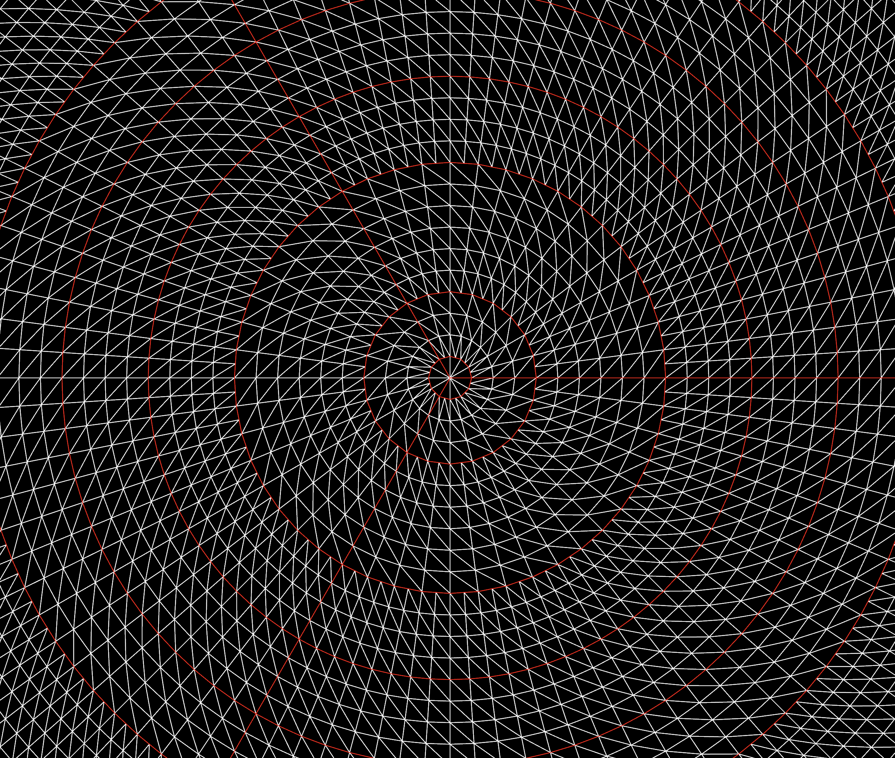
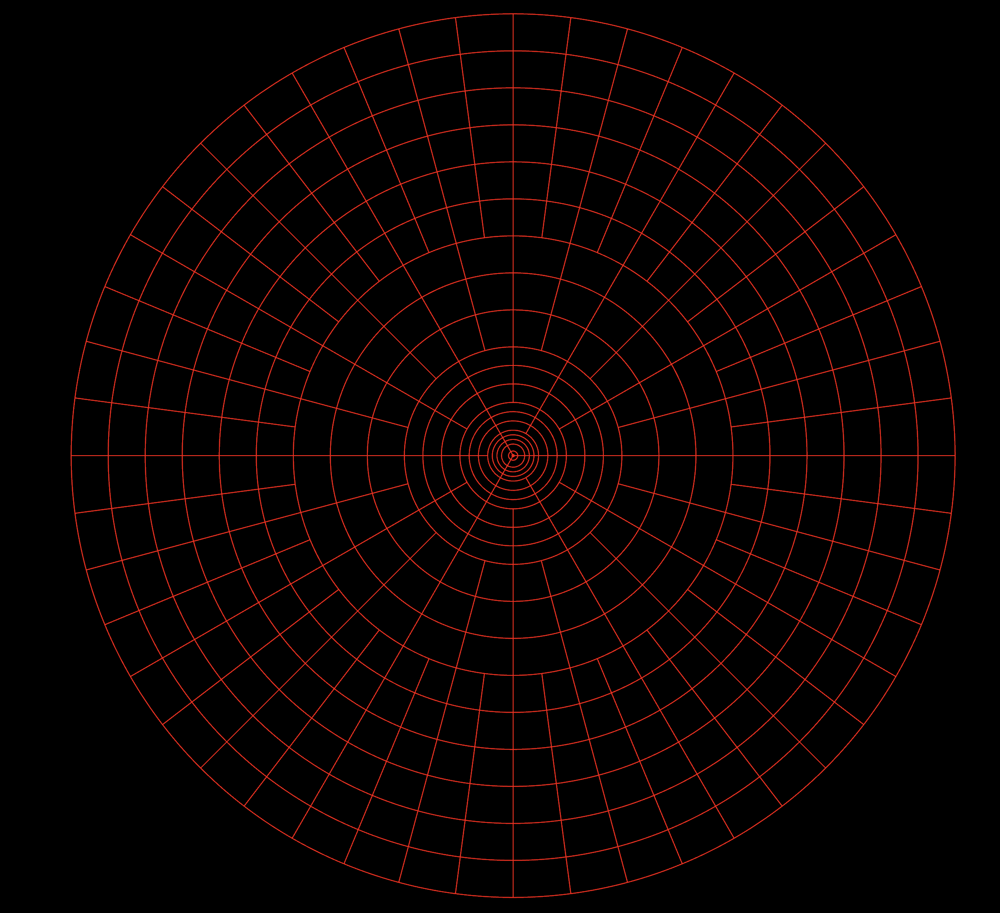
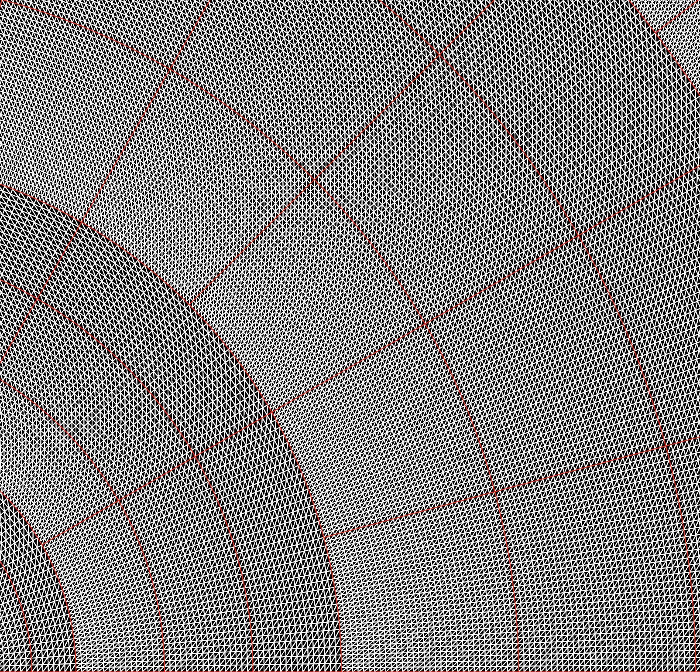

Module orbiting_sand::physics::fallingsand::mesh
source · Expand description
The mesh module contains the wireframe layout of a Celestial.
Cells

This is the wireframe layout of a Celestial (crate::entities::celestials). Each cell in this wireframe is a “pixel” in the simulation, represented in code as an crate::physics::fallingsand::elements::element::Element in a crate::physics::fallingsand::data::element_grid::ElementGrid.
Chunks
Chunks are the most basic unit of storage in the game. They are rectangular grids in memory, and mostly rectangular wrapped around a circle in the game world.
The wireframe for the chunk is generated by the self::chunk_coords::ChunkCoords which also maintains all the chunks size and shape information, as well as its relative location to other chunks, and ways to convert between game coordinates and chunk coordinates. This is a lightweight struct that can go anywhere and be Copy’d cheaply.
Chunk Layouts

This is the default layout of chunks in the game. The game operates on a radial coordinate mesh, and the trick with radial cells is that they get smaller as they get closer to the center. If we didn’t solve this problem, the resolution of our game would be very low at the edge of a planet, and very high at the center.
To fix this solution, we double the resolution of the chunks, and the number of chunks every so often out from the center, called a layer.
Chunk Doubling Layer Transitions

In this picture you can see a chunk doubling layer transition. Not all layer transitions are chunk doubling. The goal once you start chunk doubling is to keep the number of axial cells in the chunk the same, and double the number of chunks instead.
Every time one of these occurs, the number of chunks axially doubles, and the number of cells in the chunk axially stays the same.
Chunks can also double
Modules
- A directory of chunks forming a full coordinate system. The [CoordinateDir] layouts the chunks in the game.